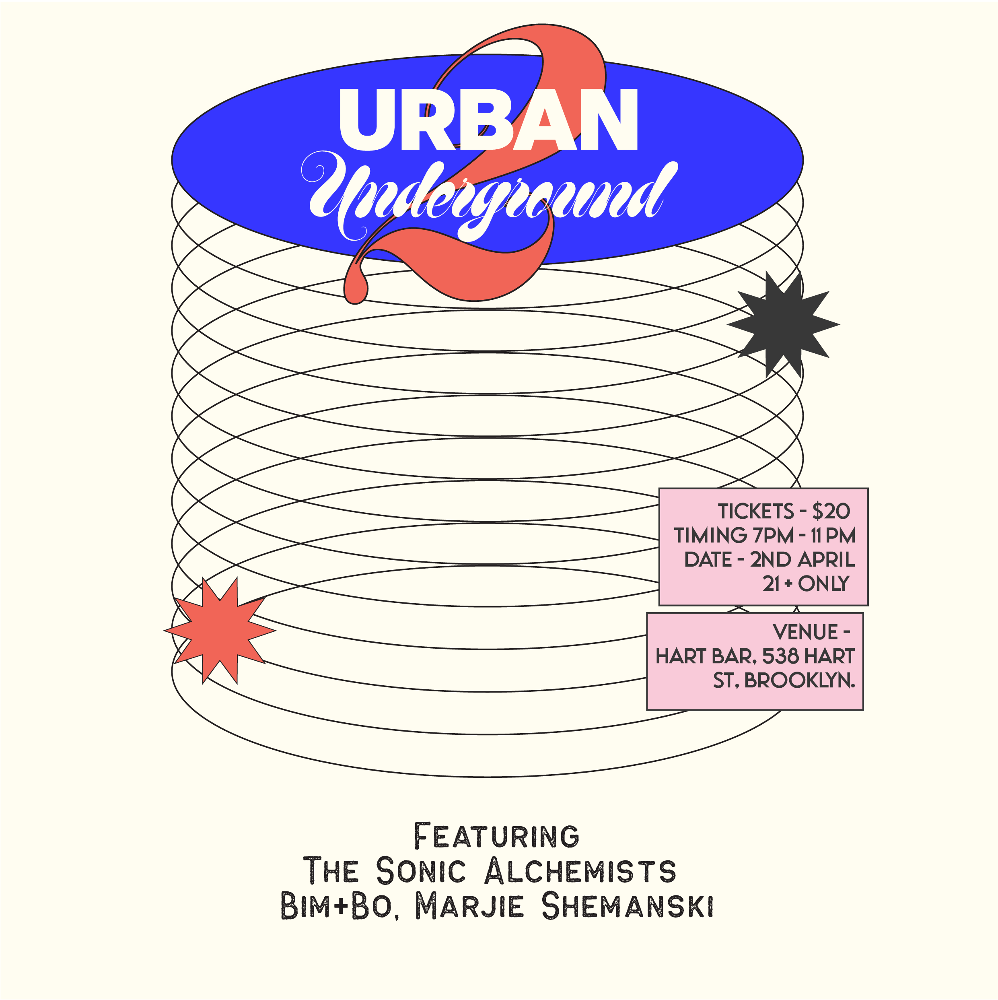

About Urban Underground
Urban Underground is a night built to make room for artists who do not fit neatly into a single box. The goal is simple: put great music in one room and let people discover sounds they might not otherwise hear side by side.
We currently have three featured acts on the lineup. Have a listen below and come spend the evening with us at Hart Bar in Brooklyn.
Lineup
The Sonic Alchemists
The Sonic Alchemists are an improvised music group led by guitarist and composer Eshaan Sood. The group's sound balances energetic grooves, spirited improvisation, and soulful introspection.
A storytelling experience at its core, the band pulls at the heartstrings of listeners, jazz fans or otherwise, while making space for spontaneity and deep listening.
Bim+Bo
bim+bo (pronounced "bim plus bo") is an alternative soul band formed in Chicago and now based in Brooklyn. The experimental duo began with producer and multi-instrumentalist Blank Face Villain and vocalist and dancer Brittany Harlin.
Blurring the line between heartfelt confessions and dance breaks, the ensemble invites both internal reflection and external release with a live show that feels generous, vulnerable, and full of movement.
Marjie Shemanski
Marji is a Brooklyn based artist and teacher. Primarily a violinist, she picked up the baritone ukulele during the pandemic and started writing as a means of therapy.
Her lyrics explore themes of love, religious trauma, individuation, and the murky waters of relationships.